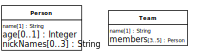

Integrity constraints (or simply constraints) are logical conditions on the data of an app. They may take many different forms. The most important type of constraints, property constraints, define conditions on the admissible property values of an object. They are defined for an object type (or class) such that they apply to all objects of that type. We concentrate on the most important cases of property constraints:
- String Length Constraints
require that the length of a string value for an attribute is less than a certain maximum number, or greater than a minimum number.
- Mandatory Value Constraints
require that a property must have a value. For instance, a person must have a name, so the name attribute must not be empty.
- Range Constraints
require that an attribute must have a value from the value space of the type that has been defined as its range. For instance, an integer attribute must not have the value "aaa".
- Interval Constraints
require that the value of a numeric attribute must be in a specific interval.
- Pattern Constraints
require that a string attribute's value must match a certain pattern defined by a regular expression.
- Cardinality Constraints
apply to multi-valued properties, only, and require that the cardinality of a multi-valued property's value set is not less than a given minimum cardinality or not greater than a given maximum cardinality.
- Uniqueness Constraints (also called 'Key Constraints')
require that a property's value is unique among all instances of the given object type.
- Referential Integrity Constraints
require that the values of a reference property refer to an existing object in the range of the reference property.
- Frozen Value Constraints
require that the value of a property must not be changed after it has been assigned initially.
The visual language of UML class diagrams supports defining integrity constraints either in a special way for special cases (like with predefined keywords), or, in the general case, with the help of invariants, which are conditions expressed either in plain English or in the Object Constraint Language (OCL) and shown in a special type of rectangle attached to the model element concerned. We use UML class diagrams for modeling constraints in design models that are independent of a specific programming language or technology platform.
UML class diagrams provide special support for expressing
multiplicity (or cardinality) constraints. This type of constraint allows
to specify a lower multiplicity (minimum cardinality) or an upper
multiplicity (maximum cardinality), or both, for a property or an
association end. In UML, this takes the form of a multiplicity expression
l..u where the lower multiplicity l is a
non-negative integer and the upper multiplicity u is either a
positive integer not smaller than l or the special value
* standing for unbounded.
For showing property multiplicity (or cardinality) constrains in a class
diagram, multiplicity expressions are enclosed in brackets and appended to
the property name, as shown in the Person class rectangle
below.
In the following sections, we discuss the different types of property constraints listed above in more detail. We also show how to express some of them in computational languages such as UML class diagrams, SQL table creation statements, JavaScript model class definitions, or the annotation-based languages Java Bean Validation annotations and ASP.NET Data Annotations.
Any systematic approach to constraint validation also requires to define a set of error (or 'exception') classes, including one for each of the standard property constraints listed above.
The length of a string value for a property such as the title of a
book may have to be constrained, typically rather by a maximum length,
but possibly also by a minimum length. In an SQL table definition, a
maximum string length can be specified in parenthesis appended to the
SQL datatype CHAR or VARCHAR, as in
VARCHAR(50).
UML does not define any special way of expressing string length constraints in class diagrams. Of course, we always have the option to use an invariant for expressing any kind of constraint, but it seems preferable to use a simpler form of expressing these property constraints. One option is to append a maximum length, or both a minimum and a maximum length, in parenthesis to the datatype name, like so
 |
Another option is to use min/max constraint keywords in the property modifier list:
 |
A mandatory value constraint
requires that a property must have a value. This can be expressed in a
UML class diagram with the help of a multiplicity constraint expression
where the lower multiplicity is 1. For a single-valued property, this
would result in the multiplicity expression 1..1, or the
simplified expression 1, appended to the property name in
brackets. For example, the following class diagram defines a mandatory
value constraint for the property name:
 |
Whenever a class rectangle does not show a multiplicity expression
for a property, the property is mandatory (and single-valued), that is,
the multiplicity expression 1 is the default for
properties.
In an SQL table creation statement, a mandatory value constraint
is expressed in a table column definition by appending the key phrase
NOT NULL to the column definition as in the following
example:
CREATE TABLE persons(
name VARCHAR(30) NOT NULL,
age INTEGER
)According to this table definition, any row of the
persons table must have a value in the column
name, but not necessarily in the column
age.
In JavaScript, we can code a mandatory value constraint by a class-level check function that tests if the provided argument evaluates to a value, as illustrated in the following example:
Person.checkName = function (n) {
if (n === undefined) {
return "A name must be provided!"; // constraint violation error message
} else return ""; // no constraint violation
};With Java Bean Validation, a mandatory property like
name is annotated with NotNull in the
following way:
@Entity
public class Person {
@NotNull
private String name;
private int age;
}The equivalent ASP.NET Data Annotation is Required as
shown in
public class Person{
[Required]
public string name { get; set; }
public int age { get; set; }
}A range constraint requires that a property must have a value from
the value space of the type that has been defined as its range. This is
implicitly expressed by defining a type for a property as its range. For
instance, the attribute age defined for the object type
Person in the class diagram above has the range
Integer, so it must not have a value like "aaa", which does
not denote an integer. However, it may have values like -13 or 321,
which also do not make sense as the age of a person. In a similar way,
since its range is String, the attribute name
may have the value "" (the empty string), which is a valid string that
does not make sense as a name.
We can avoid allowing negative integers like -13 as age values,
and the empty string as a name, by assigning more specific datatypes as
range to these attributes, such as NonNegativeInteger to
age, and NonEmptyString to name.
Notice that such more specific datatypes are neither predefined in SQL
nor in common programming languages, so we have to implement them either
in the form of user-defined types, as supported in SQL-99 database
management systems such as PostgreSQL, or by using suitable additional
constraints such as interval
constraints, which are discussed in the next section. In a
UML class diagram, we can simply define NonNegativeInteger
and NonEmptyString as custom datatypes and then use them in
the definition of a property, as illustrated in the following diagram:
 |
In JavaScript, we can code a range constraint by a check function, as illustrated in the following example:
Person.checkName = function (n) {
if (typeof(n) !== "string" || n.trim() === "") {
return "Name must be a non-empty string!";
} else return "";
};This check function detects and reports a constraint
violation if the given value for the name property is not
of type "string" or is an empty string.
In a Java EE web app, for declaring empty strings as non-admissible user input we must set the context parameter
javax.faces.INTERPRET_EMPTY_STRING_SUBMITTED_VALUES_AS_NULL
to true in the web deployment descriptor file
web.xml.
In ASP.NET, empty strings are non-admissible by default.
An interval constraint requires that an attribute's value must be
in a specific interval, which is specified by a minimum value or a
maximum value, or both. Such a constraint can be defined for any
attribute having an ordered type, but normally we define them only for
numeric datatypes or calendar datatypes. For instance, we may want to
define an interval constraint requiring that the age
attribute value must be in the interval [25,70]. In a class diagram, we
can define such a constraint by using the property modifiers
min and max, as shown for the age
attribute of the Driver class in the following
diagram.
 |
In an SQL table creation statement, an interval constraint is
expressed in a table column definition by appending a suitable
CHECK clause to the column definition as in the following
example:
CREATE TABLE drivers(
name VARCHAR NOT NULL,
age INTEGER CHECK (age >= 25 AND age <= 70)
)In JavaScript, we can code an interval constraint in the following way:
Driver.checkAge = function (a) {
if (a < 25 || a > 70) {
return "Age must be between 25 and 70!";
} else return "";
};In Java Bean Validation, we express this interval constraint by
adding the annotations Min(0) and Max(120) to
the property age in the following way:
@Entity
public class Driver {
@NotNull
private String name;
@Min(25) @Max(70)
private int age;
} The equivalent ASP.NET Data Annotation is
Range(25,70) as shown in
public class Driver{
[Required]
public string name { get; set; }
[Range(25,70)]
public int age { get; set; }
} A pattern constraint requires that a string attribute's value must
match a certain pattern, typically defined by a regular expression. For instance, for the
object type Book we define an isbn attribute
with the datatype String as its range and add a pattern
constraint requiring that the isbn attribute value must be
a 10-digit string or a 9-digit string followed by "X" to the
Book class rectangle shown in the following diagram.
 |
In an SQL table creation statement, a pattern constraint is
expressed in a table column definition by appending a suitable
CHECK clause to the column definition as in the following
example:
CREATE TABLE books(
isbn VARCHAR(10) NOT NULL CHECK (isbn ~ '^\d{9}(\d|X)$'),
title VARCHAR(50) NOT NULL
)The ~ (tilde) symbol denotes the regular
expression matching predicate and the regular expression
^\d{9}(\d|X)$ follows the syntax of the POSIX standard
(see, e.g. the PostgreSQL
documentation).
In JavaScript, we can code a pattern constraint by using the
built-in regular expression function test, as illustrated
in the following example:
Person.checkIsbn = function (id) {
if (!/\b\d{9}(\d|X)\b/.test( id)) {
return "The ISBN must be a 10-digit string or a 9-digit string followed by 'X'!";
} else return "";
};In Java EE Bean Validation, this pattern constraint for
isbn is expressed with the annotation Pattern
in the following way:
@Entity
public class Book {
@NotNull
@Pattern(regexp="^\\(\d{9}(\d|X))$")
private String isbn;
@NotNull
private String title;
} The equivalent ASP.NET Data Annotation is
RegularExpression as shown in
public class Book{
[Required]
[RegularExpression(@"^(\d{9}(\d|X))$")]
public string isbn { get; set; }
public string title { get; set; }
}A cardinality constraint requires that the cardinality of a multi-valued property's value set is not less than a given minimum cardinality or not greater than a given maximum cardinality. In UML, cardinality constraints are called multiplicity constraints, and minimum and maximum cardinalities are expressed with the lower bound and the upper bound of the multiplicity expression, as shown in the following diagram, which contains two examples of properties with cardinality constraints.
|  |
The attribute definition nickNames[0..3] in the class
Person specifies a minimum cardinality of 0 and a maximum
cardinality of 3, with the meaning that a person may have no nickname or
at most 3 nicknames. The reference property definition
members[3..5] in the class Team specifies a
minimum cardinality of 3 and a maximum cardinality of 5, with the
meaning that a team must have at least 3 and at most 5 members.
It's not obvious how cardinality constraints could be checked in an SQL database, as there is no explicit concept of cardinality constraints in SQL, and the generic form of constraint expressions in SQL, assertions, are not supported by available DBMSs. However, it seems that the best way to implement a minimum (or maximum) cardinality constraint is an on-delete (or on-insert) trigger that tests the number of rows with the same reference as the deleted (or inserted) row.
In JavaScript, we can code a cardinality constraint validation for a multi-valued property by testing the size of the property's value set, as illustrated in the following example:
Person.checkNickNames = function (nickNames) {
if (nickNames.length > 3) {
return "There must be no more than 3 nicknames!";
} else return "";
};With Java Bean Validation annotations, we can specify
@Size( max=3) List<String> nickNames @Size( min=3, max=5) List<Person> members
A uniqueness constraint (or
key constraint) requires that a property's value
(or the value list of a list of properties in the case of a composite
key constraint) is unique among all instances of the given object type.
For instance, in a UML class diagram with the object type
Book we can define the isbn attribute to be
unique, or, in other words, a
key, by appending the (user-defined) property
modifier keyword key in curly braces to the attribute's
definition in the Book class rectangle shown in the
following diagram.
 |
In an SQL table creation statement, a uniqueness constraint is
expressed by appending the keyword UNIQUE to the column
definition as in the following example:
CREATE TABLE books(
isbn VARCHAR(10) NOT NULL UNIQUE,
title VARCHAR(50) NOT NULL
)In JavaScript, we can code this uniqueness constraint by a check
function that tests if there is already a book with the given
isbn value in the books table of the app's
database.
A unique attribute (or a composite key) can be declared to be the standard identifier
for objects of a given type, if it is mandatory (or if all attributes of the composite key are
mandatory). We can indicate this in a UML class diagram with the help of the property modifier
id appended to the declaration of the attribute isbn as shown in the
following diagram.
 |
Notice that such a standard ID declaration implies both a mandatory value and a uniqueness constraint on the attribute concerned.
Often, practitioners do not recommended using a composite key as a standard ID, since composite identifiers are more difficult to handle and not always supported by tools. Whenever an object type does not have a key attribute, but only a composite key, it may therefore be preferable to add an artificial standard ID attribute (also called surrogate ID) to the object type. However, each additional surrogate ID has a price: it creates some cognitive and computational overhead. Consequently, in the case of a simple composite key, it may be preferable not to add a surrogate ID, but use the composite key as the standard ID.
There is also an argument against using any real attribute, such as the isbn
attribute, for a standard ID. The argument points to the risk that the values even of natural ID
attributes like isbn may have to be changed during the life time of a business
object, and any such change would require an unmanageable effort to change also all
corresponding ID references. However, the business semantics of natural ID attributes implies
that they are frozen. Thus, the need of a value change can only occur in the case of a data
input error. But such a case is normally detected early in the life time of the object
concerned, and at this stage the change of all corresponding ID references is still
manageable.
Standard IDs are called primary keys in relational databases. We can declare an attribute to be the primary
key in an SQL table creation statement by appending the phrase PRIMARY KEY to the
column definition as in the following example:
CREATE TABLE books(
isbn VARCHAR(10) PRIMARY KEY,
title VARCHAR(50) NOT NULL
)In object-oriented programming languages, like JavaScript and Java, we cannot code a standard ID declaration, because this would have to be part of the metadata of a class definition, and there is no support for such metadata. However, we should still check the implied mandatory value and uniqueness constraints.
A referential integrity constraint requires that the values of a reference property refer to an object that exists in the population of the property's range class. Since we do not deal with reference properties in this chapter, we postpone the discussion of referential integrity constraints to Volume 2.
A frozen value constraint defined for a property requires that the value of this property must not be changed after it has been assigned. This includes the special case of read-only value constraints on mandatory properties that are initialized at object creation time.
Typical examples of properties with a frozen value constraint are
standard identifier attributes and event properties. In the case of
events, the semantic principle that the past cannot be changed prohibits
that the property values of events can be changed. In the case of a
standard identifier attribute we may want to prevent users from changing
the ID of an object since this requires that all references to this
object using the old ID value are changed as well, which may be
difficult to achieve (even though SQL provides special support for such
ID changes by means of its ON UPDATE CASCADE clause for the
change management of foreign keys).
The following diagram shows how to define a frozen value
constraint for the isbn attribute:
In Java, a read-only value
constraint can be enforced by declaring the property to be
final. In JavaScript, a read-only property slot can be implemented as
in the following example:
Object.defineProperty( obj, "teamSize", {value: 5, writable: false, enumerable: true})where the property slot obj.teamSize is made
unwritable. An entire object obj can be frozen with
Object.freeze( obj).
We can implement a frozen value constraint for a property in the property's setter method like so:
Book.prototype.setIsbn = function (i) {
if (this.isbn === undefined) this.isbn = i;
else console.log("Attempt to re-assign a frozen property!");
}So far, we have only discussed how to define and check property constraints. However, in certain cases there may be also integrity constraints that do not just depend on the value of a particular property, but rather on
the values of several properties of a particular object (object-level constraints),
the value of a property before and its value after a change attempt (dynamic constraints),
the set of all instances of a particular object type (type-level constraints),
the set of all instances of several object types.
In a class model, property constraints can be expressed within the property declaration
line in a class rectangle (typically with keywords, such as id, max,
etc.). For expressing more complex constraints, such as object-level or type-level constraints,
we can attach an invariant declaration box to the class rectangle(s)
concerned and express the constraint in unambiguous plain English or in
the Object Constraint Language (OCL).
A simple example of an object-level constraint expressed as an invariant is shown in
Figure 7.1.

A general approach for implementing object-level constraint validation consists of taking the following steps:
Choose a fixed name for an object-level constraint validation function, such as
validate.For any class that needs object-level constraint validation, define a
validatefunction returning either aConstraintViolationor aNoConstraintViolationobject.Call this function, if it exists, for the given model class,
in the UI/view, on form submission;
in the model class, before save, both in the
createand in theupdatemethod.
Constraints affecting two or more model classes could be defined in the form of static
methods (in a model layer method library) that are invoked from the validate
methods of the affected model classes.